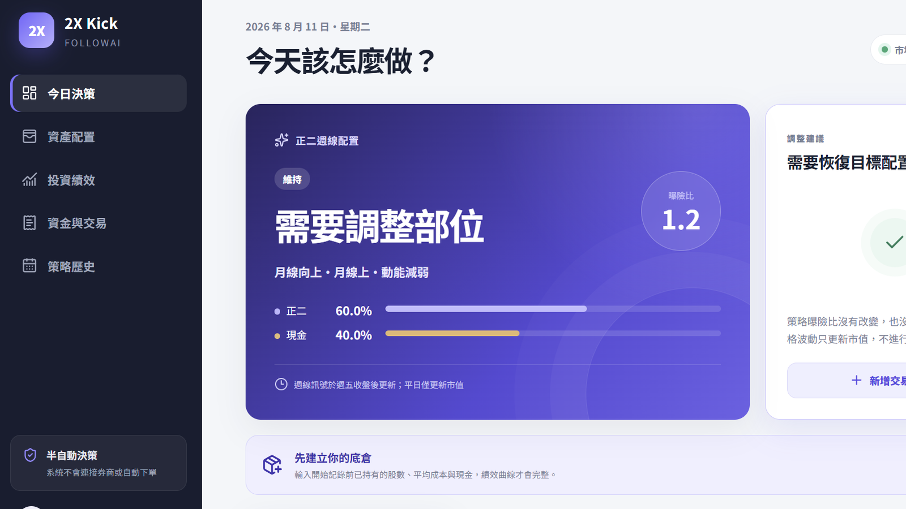

作品 · 量化投資
2X Kick 正二倉位策略
2026.08 · 個人專案

FIG. 05 — 產品主畫面
關於這個作品
2X Kick 是 FollowAI 旗下的正二半自動資產配置服務，協助使用者依週線策略管理 00631L 的配置與現金部位。
系統會在週五收盤後更新策略配置，平日則更新現價與市值；使用者可記錄底倉、入出金與交易，查看實際配置是否偏離目標，並將建議交易套用為暫估紀錄。
作品亮點
依週線策略更新正二與現金的目標曝險配置
記錄底倉、交易與資金流，計算個人資產與損益
比較實際與目標配置，產出需要調整時的建議股數
Firebase UID 隔離個人帳本資料，策略快照存於 PostgreSQL